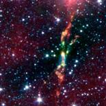

BHR 71
Ne aflăm la 600 ani-lumină distanţă de Soare, într-o nebuloasă mică şi întunecată - BHR 71. În interiorul ei, există două surse de radiaţii infraroşii şi radio, probabil două stele foarte apropiate, aflate în faza iniţială a evoluţiei lor - HH320 şi HH321. Ambele pierd mari cantităţi de materie în timp ce colapsează. Cea mai puternică emisie este cea a stelei HH 320, care este, probabil, înconjurată de un disc masiv de material stelar ejectat anterior. Deşi nu se vede cu instrumente optice, aceasta este de zece ori mai luminoasă decât Soarele.